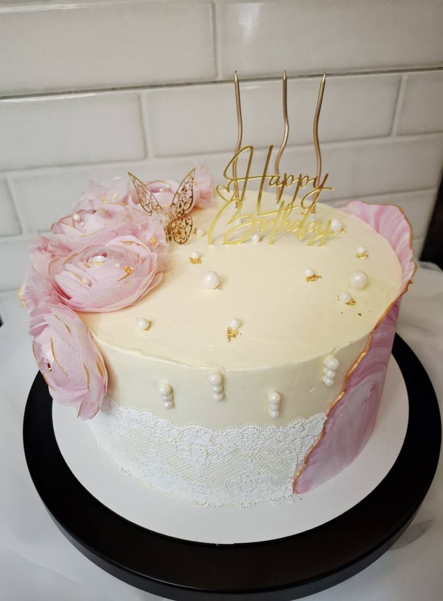
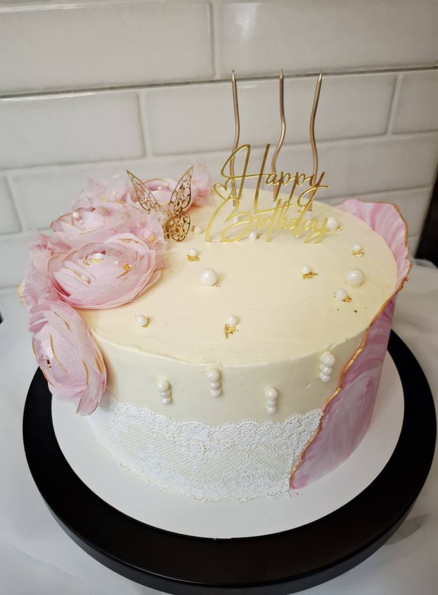

Cine sunt?
Mă numesc Marina Labliuc și Deliciu este mica mea afacere de suflet. Fac torturi, checuri și diverse dulciuri acasă, în bucătăria mea, în condiții simple, dar curate, folosind ingrediente naturale și rețete cunoscute. Nu am laborator mare și nici producție în serie. Tot ce vezi la Deliciu este făcut manual, cu răbdare și atenție la detalii.